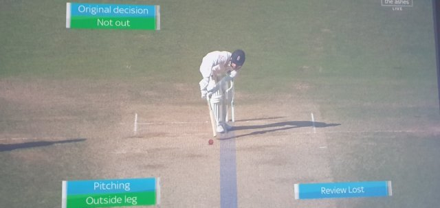
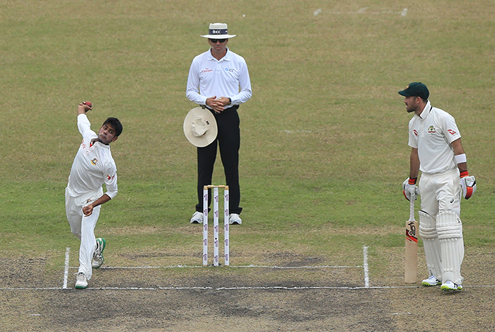
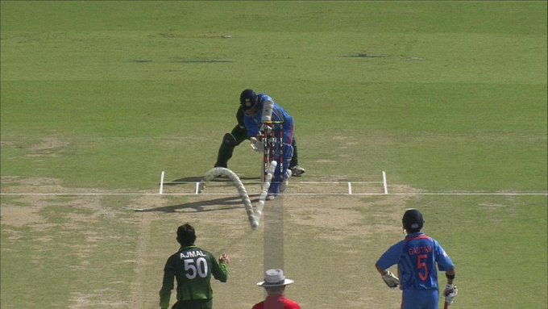
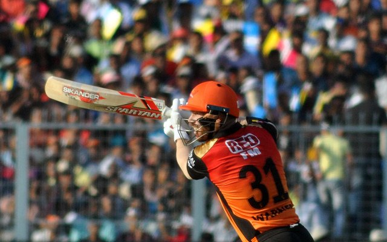
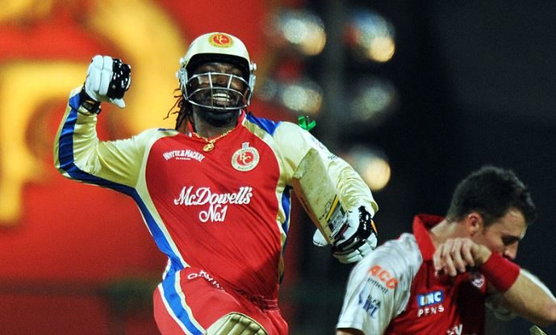

Cricket Blog

-
5 Reasons Why Changing the LBW Laws would be a Poor Move | Changing the LBW laws | Ian Chappell’s solution to bridging the gap between bat and ball
As I get ready for another Monday with coffee in hand, I stare in disbelief at my computer screen. Sitting there, I am wondering if ESPNCricinfo are so out of ideas during the COVID-19 pandemic that they have turned to satirical articles. But, I realise that ESPNCricinfo don’t really do satirical articles. Plus, Ian Chappell isn’t the kind of guy to write them. Chappell, a tough cricketer and possessor of one of the finest minds of the game, has suggested cricket changes its LBW laws once it returns. Specifically, he says that it shouldn’t matter where the ball pitches or hits the batsman; if the umpire thinks it’ll hit the stumps, you’re out.
“Forget where the ball pitches and whether it strikes the pad outside the line or not; if it’s going to hit the stumps, it’s out” are Chappelli’s words. But, while this might seem attractive to the bowlers, it is a bad idea for the game.
The reasons why we have the current legside law is two fold;
A ball pitching outside leg can create a bit of a blind spot for a batsman, given they stand side on. Leg stump bowling is an unattractive feature of cricket. Also, it is often considered something to avoid from a bowling point of view. “Top of off”, anyone?
If Ian Chappell gets his wish, then a delivery pitching outside leg stump can result in a wicket. So, why not bowl around the wicket? Switch the famous 7-2 field and make it a 2-7 field? Focus on legstump rather than off? Boring. This move will encourage negative bowling; the kind that if there is too much of, the umpire will call a wide as per current laws. There will be an increase in unwatchable passages of play, which does not do the game any favours, should Chappell get his wish.
Read more about this

-
Swings the balance too far the other way
Cricket has evolved into a batsman’s game. However, better pitches, rather than a change in LBW law, is a key part of creating an equal battle between bat and ball.
The balance will swing too far the other way if we introduce an LBW rule where it doesn’t matter where the ball pitches or hits the batsman. All of a sudden, bowlers, particularly spinners on tracks with some turn, will have too much of an advantage. As a result, we will see an increase in low scores as the margin of error for batsmen becomes way too small.
It’s all about an equal battle between bat and ball. Tactics focused on hitting the pad by all means possible do not encourage positive, attractive cricket.
Read more about this

-
We will place our trust in Hawkeye even more
Hawkeye isn’t considered to be 100% accurate; the reason why we have umpire’s call. So, could you imagine trusting Hawkeye to make the right call on a delivery the hits a batsman well outside off or leg stump? Think about it. We question Hawkeye even when the ball hits a batsman in line. Ben Stokes’ non-LBW in the dying stages of the classic Headingley Test of 2019 comes to mind. So does Virat Kohli’s close LBW in the 2019 World Cup Semi Final. And, of course, who could forget the Sachin Tendulkar call in the 2011 World Cup Semi Final, still debated to this day? With this rule change, you’re asking Hawkeye to predict the path of the ball on different angles and longer distances, which can open up a whole other can of worms.
Read more about this

-
T20 record: 280 matches, 9,218 runs, avg 37.93, SR 142.20, 75 50s, 8 100s
David Warner’s T20 record is absolutely incredible. It was a really tough call to not pick the likes of Brendon McCullum, Rohit Sharma and Martin Guptill as opener, but with Warner trumping the others on key stats, it is justified. To paint a picture, Warner’s strike rate of 142.20 is just four less than Chris Gayle’s and higher than McCullum’s of 136.49; two players who found the boundary with ease. Also, Warner makes a 50+ score every 3.73 matches, which is the best of all the T20 greats with at least 7,000 runs to their name.
In addition, Warner is the only player to win the IPL Orange Cap three times, and with Australia’s renewed focus on T20I cricket, Warner will only continue to go from strength-to-strength as he nears 10,000 T20 runs.
Read more about this

-
T20 record: 404 matches, 13,296 runs, avg 38.20, SR 146.94, 82 50s, 22 100s, 80 wickets, econ. 7.64'
When one thinks about T20 cricket, Chris Gayle comes to mind.
Much has been expected of Chris Gayle right throughout his career, but he has looked at expectation as an opportunity to wow rather than a threat of disappointing people. Over the course of his 404-game career, taking him right around the globe (19 franchises), Gayle has ammassed the most runs (13,296), the most centuries (22. No one else has 10) and has 978 sixes to his name (next best is 652). The Undisputed GOAT.
Read more about this